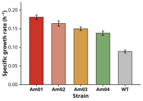
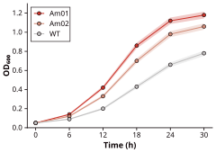
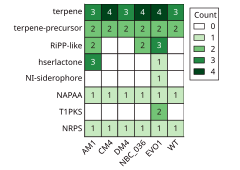

데이터 패널¶
측정값에서 그리는 패널(막대, 선, 산점, 히트맵)이다. matplotlib 로 그리고 모델을 부르지 않으며 아무것도 밖으로 보내지 않는다. 패널 한 장에 2 초 안팎이다.
python3 make_figure.py --name growth --out out/growth --panel examples/data_panel/bar.panel.yaml
Claude Code 에서는 /illustrator-figkit:make examples/data_panel/bar.panel.yaml 이 같은 일을 한다.

panel.yaml¶
어떤 그림을 그릴지는 panel.yaml 이 정한다. 위 그림의 입력이 이것이다.
kind: bar
data: {csv: growth_rate.csv}
x: strain
y: mu
err: sem
hero: Am01
reference: WT
xlabel: Strain
ylabel: "Specific growth rate (h⁻¹)"
yticks: [0, 0.05, 0.10, 0.15, 0.20]
csv 경로는 panel.yaml 이 있는 폴더 기준이다. 예제 수치는 데모 값이고 측정값이 아니다.
| 키 | 뜻 |
|---|---|
kind |
bar, line, scatter, heatmap |
data |
{columns: [...], rows: [[...], ...]} 인라인 표, 또는 {csv: 경로} |
x, y |
열 이름. bar 의 x 는 범주, line 과 scatter 는 수치 |
z |
heatmap 의 값 열. x 는 열 범주, y 는 행 범주(긴 형식 한 칸 한 줄) |
err |
오차 열. bar 는 오차 막대, line 은 err_style 로 bars(기본) 또는 band |
series |
line 과 scatter 의 계열 열. 계열마다 선이나 점 묶음 하나와 범례 한 줄 |
hero, reference |
강조할 범주와 기준 범주(회색, 맨 뒤에 그린다) |
color, colors |
모두에 한 색, 또는 범주별 색. 팔레트 토큰 이름이나 #hex |
xlabel, ylabel |
축 제목. 없으면 열 이름. heatmap 은 없으면 비운다 |
xlim, ylim, xticks, yticks |
축 범위와 눈금. 범위가 눈금보다 이긴다 |
grid |
true 면 y 격자 |
legend |
false 로 끈다. {loc: "upper left"} 또는 {loc: "outside right"} |
mode |
heatmap 칸 색. count 또는 grey |
annotate, fmt |
heatmap 칸 숫자(기본 켬, {:.0f}) |
legend_title, col_rotation |
heatmap 범례 제목, 열 라벨 기울기(기본 45) |
bar_width, marker_pt |
막대 폭(기본 0.62), 산점 표지 지름 pt(기본 5) |
수식 문자열($)은 받지 않는다.


예제는 examples/data_panel/ 에 다섯 가지(bar, line, line_band, scatter, heatmap)가 있다.
csv 만 있을 때¶
--data <csv> 는 같은 순서의 --panel 과 짝지어 그 패널의 데이터를 바꾼다. 짝이 없는 csv 는 그리지 않는다. 어떤 그림을 그릴지는 저자가 정할 일이라 도구가 추측하지 않는다. 대신 열 이름을 채운 템플릿 <csv이름>.panel.template.yaml 을 쓰고 종료코드 2 로 멈춘다. 템플릿을 채워 --panel 로 준다.
python3 make_figure.py --name y --out out/y --data examples/make_figure/yield.csv
# 종료코드 2, 템플릿 경로를 찍는다
크기와 저널¶
| 옵션 | 뜻 |
|---|---|
--width <pt> |
그림 폭. 기본은 이단 493.2 pt, 패널 한 장만 있는 데이터 그림은 240.9 pt |
--journal <키> |
저널 규격의 글자 하한과 캔버스 검사 |
높이는 언제나 그림에 맞춰 잘린다. 저널은 나중에 바꾸기 어렵다. 다 그린 뒤에는 축소밖에 방법이 없고 축소하면 글자 하한이 같이 깨진다.
기전도와 함께¶
경로 B 요청에 --panel 을 더하면 작가가 패널을 그림 안에 배치한다(경로 B).
사실 확인¶
데이터 그림의 근거 보고서는 그린 값을 사용자 데이터(user_data)와 대조한 사실로 적는다. 렌더한 SVG 를 다시 읽어 데이터와 견주는 검사도 따로 있다.
python3 figkit/fact_check.py --panel out/growth/growth.svg examples/data_panel/bar.panel.yaml
눈금이 한 직선 척도에 있는지 보고 막대 끝, 오차 막대 끝, 표지 중심을 값으로 되돌려 대조한다. 그림 영역 밖으로 잘린 표지는 데이터에 없는 값을 그린 것이라 FAIL 이다.